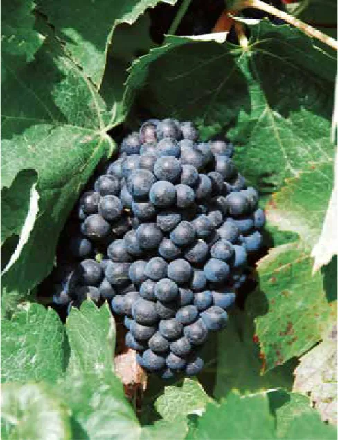

Kapitel 3 · Die portugiesischen Rebsorten
Baga (R)
Herkunft:
Schon 1875 beschrieb Vila Maior die Verbreitung dieser Sorte als auf die Bairrada beschränkt. Mehr als die Hälfte der Rebfläche der Bairrada ist mit ihr bepflanzt.
Weinbeschreibung:
„Die Weine zeichnen sich durch eine intensive rubin- oder granatrote, manchmal violette Farbe aus. Das Aroma ist sehr fruchtig, mit Anklängen an Maulbeere, Kompott, Honig und Kampfer. Junge Weine wirken am Gaumen oft etwas dünn, mit kräftigen Tanninnoten und ein wenig verschlossen. Mit der Reife werden die Tannine runder, und der Wein gewinnt an Tiefe“ (Cardoso 2005). Wegen ihres hohen Ertragspotenzials ist die Sorte etwas umstritten. Bei sorgfältiger Qualitätskontrolle kann sie jedoch einige der besten Weine Portugals hervorbringen.
Regionale Einstufung:
DOC-Qualitätswein: Douro, Bairrada, Beira Interior, Alenquer, Tejo, Unterregionen Almeirim, Cartaxo, Chamusca und Tomar.

IPR-Qualitätswein: Encostas d’Aire, Alcobaça.
Landwein: Minho, alle Unterregionen der Beira Interior, Provinz Estremadura, Tejo, Alentejo und Algarve.
Morphologie:
Junger Trieb (Form der Triebspitze): offen, mit karminroter Spitze und kräftiger, dichter Behaarung.
Junges Blatt: grün mit bronzefarbenen Flecken, kräftigere, dichtere Behaarung auf der Unterseite.
Blütenstand (Blütengeschlecht): zwittrig.
Ausgewachsenes Blatt: mittelgroß, fünfeckig, fünflappig; mittel- bis dunkelgrüne Spreite, leicht verdreht, leichte Blasigkeit, dichte Behaarung auf der Unterseite. Kurze konvexe Zähne, leicht offene V-förmige Stielbucht. Geschlossene U-förmige obere Seitenbuchten.
Traube: mittelgroß, konisch, dicht, Stiel mittellang.
Beere: rund, mittelgroß, blauschwarz, Haut mittelstark, weiches Fruchtfleisch.
Phänologie:
Austrieb: mittelfrüh, 10 Tage nach der Castelão.
Blüte: mittelfrüh, 6 Tage nach der Castelão.
Farbumschlag der Beere: mittelfrüh, 2 Tage nach der Castelão.
Lesereife der Beere: spät, 2 Wochen nach der Castelão.
Vegetatives und agronomisches Potenzial:
Wuchskraft der Triebe: mittel bis hoch.
Schnittholzgewicht: 3,5 t/ha.
Triebhaltung (Wuchsform): halbaufrecht, einige Triebe jedoch plagiotrop und hängend.
Länge der Internodien: mittel.
Trieblänge: mittel.
Neigung zur Geiztriebbildung: hoch.
Mehrfachaustrieb: gering.
Fruchtbarkeitsindex der Knospen: hoch.
Ertrag: mittel, bis 15.000 l/ha. (Statistischer RNSV-Wert: 2,2 kg/Rebe, Mittel von mindestens 40 Klonen in Anadia über 5 Jahre.)
Ertragsbeständigkeit: stabil.
Gleichmäßigkeit des Ertrags: gleichmäßig.
Winkler-Index: hoch, daher Reifeprobleme bei Regen im September.
Empfindlichkeit gegenüber abiotischen Faktoren: normalerweise keine.
Anfälligkeit für Pilzkrankheiten: gering für Peronospora und Oidium, äußerst anfällig für Botrytis.
Traubengröße: im Mittel 260 g, aber unregelmäßig.
Dichte der Traube: sehr dicht.
Beerengröße: groß (1,5 g).
Beerenhaut: mittelfest, empfindlich.
Kerne je Beere: 2,6.
Erziehungssystem: Cordon Royal am Drahtrahmen; traditionell mehrfacher Guyot.
Bodenansprüche: für alle Bodentypen geeignet; für bessere Qualität empfehlen sich jedoch gut durchlässige, weniger fruchtbare Böden mit begrenzter Feuchtigkeit. Kalkhaltige Tonböden des Jura gelten als gut, Böden mit niedrigem pH-Wert als ungeeignet.
Klimaansprüche: intensive Sonneneinstrahlung für einen langen Wachstumszyklus.
Bewässerung: nur auf sehr trockenen, kargen Böden.
Verrieseln/Kleinbeerigkeit: keine.
Verderb reifer Beeren: Gefahr unzureichender Reife und Traubenfäule.
Vogelfraß: gering.
Eignung für maschinelle Lese: gut geeignet.
Önologie:
Weintyp: Qualitätswein, roter Schaumwein, Roséwein.
Potenzieller Alkoholgehalt: mittel. Wegen ihres hohen Ertragspotenzials kann die Sorte auf fruchtbaren Böden nicht ausreifen. Durch Ertragsbegrenzung lassen sich mit ihr Weine sehr hoher Qualität erzielen. Statistischer RNSV-Wert: 10,35 % vol. (Mittel von mindestens 40 Klonen in Anadia über 7 Jahre).
Natürliche Säure des Mostes: relativ hoch (6–7 g/l). Statistischer RNSV-Wert: 5,88 g/l (Mittel von mindestens 40 Klonen in Anadia über 7 Jahre).

Gesamtanthocyane: statistischer RNSV-Wert 865,86 mg/l (Mittel von mindestens 40 Klonen in Anadia über 2 Jahre).
Gesamtphenolindex des Mostes (bei 280 nm): statistischer RNSV-Wert 30,52 (Mittel von mindestens 40 Klonen in Anadia über 2 Jahre).
Oxidationsrisiko des Mostes: nur bei unzureichendem Pflanzenschutz.
Farbintensität des Weins: hoch.
Farbton des Weins: granatrot.
Oxidationsrisiko des Weins: sehr stabil.
Aromaprofil: hohe Gehalte an Terpenoiden, Sesquiterpenoiden und Norisoprenoiden.
Alterungspotenzial: ausgezeichnet. Gut geeignet für den Fassausbau.